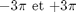
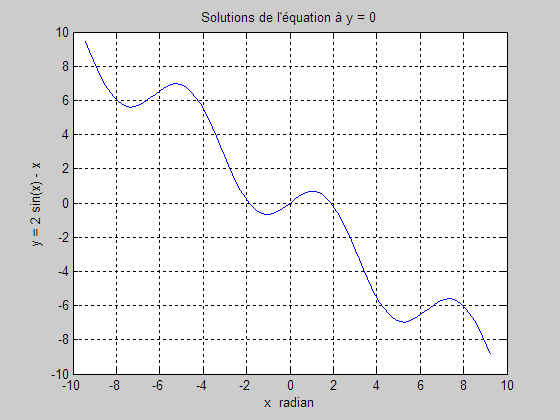

GraphEx4
clear; clc; close all;
Générer une centaine de valeurs entre

for i = 1:100 x(i) = -3*pi + (i-1)*(6*pi)/100; y(i) = 2*sin(x(i))-x(i); end plot(x,y); % Compléter le graphique. grid on; xlabel('x radian'); ylabel('y = 2 sin(x) - x'); title('Solutions de l''équation à y = 0');
